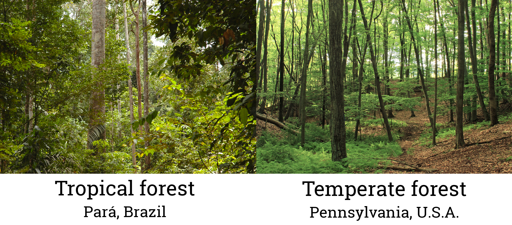

Part 1
There are 2 questions in this section (1 A-B).
How do pathways of matter and energy transformation function at larger scales?: A forest of trees
In this assignment, we will reason about matter and energy at larger scales. Up until now, we have been thinking about pathways of matter and energy in individual organisms like animals, plants, or fungi. However, we know that many individuals of different species can live together in one habitat, forming a community.
Our system of interest is a forest. The forest in this example is real and exists in Brazil, in South America, a tropical climate. Tropical climates do not have the same seasons that we do in temperate climates (like Stony Brook). In tropical areas, temperature is fairly consistent over the year (rainfall may vary over the year, with a dry and a wet season). Tropical climates also have many more species than temperate climates.
At first, we will limit ourselves to thinking about just the tree species that live in the forest. There are other kinds of organisms in the forest as well: mammals, insects, vines, ferns, soil organisms, etc. However, trees make up the majority of the biomass in the forest.
If you are having trouble submitting your responses, make sure: 1) your email is filled in on the 'Introduction' tab, and 2) you have unchecked 'None selected.'
When you press the submit button, your responses will be recorded and you will no longer be able to change your answer.
As we discussed in a previous assignment, plant dry biomass is made up of mostly carbon and oxygen atoms, whether the plant is a 6-foot tall sunflower or a 200-foot tall tropical tree. Plants are made up of other types of atoms too, like nitrogen and phosphorus, but those atoms aren’t as abundant in the plant’s body.
Biomass is a word used to describe the matter that makes up organisms. Matter and energy are closely associated with one another in organisms, but they should always be thought of separately. Matter and energy cannot be converted into one another in biological systems.
Trees contain a lot of water, and thus, just like sunflowers, trees’ wet biomass is similar to or greater than their dry biomass. Even though trees have wood and sunflowers do not, there is a lot of water inside the cells and tissues of trees.
There are many different kinds of molecules in trees. Molecules like cellulose and lignin are extremely abundant and made up mostly of carbon and oxygen atoms. Lignin is a very large carbohydrate molecule with a lot of carbon that makes up wood. Remember that plants contain many other kinds of molecules as well, including starch, sucrose, proteins, DNA, lipids, etc., but they are less abundant.

Let’s focus on the trees in a small (one hectare) patch of forest. For reference, one hectare is about the size of a soccer (football) or baseball field. We will start with a no-penalty question. The goal of this question is to get you used to the scale of the one hectare forest in this example.
A typical hectare of tropical forest contains about 210,000,000 g of carbon in its trees, so this mass is greater than the mass of 200 cars. We will continue to use the mass of a car as a reference point for the duration of this assignment.

However, one hectare isn’t all that large--the area of the entire forest in northern Brazil that we are using as an example is 140,000 hectares. So this forest as a whole contains about 29,400,000,000,000 g of carbon in its trees, which is about the mass of 29,400,000 cars (it would take 100 days for this many cars to cross the George Washington Bridge in New York City). Were we to consider the mass of carbon in all forests globally, the amount of carbon contained is hard to comprehend! The world’s forests contain a considerable portion of the carbon present in Earth’s ecosystems.
End of Part 1, please move on to Part 2 using the tabs at the top of the page.
Part 2
There are 4 questions in this section (2 A-D).
Please complete Part 1 before beginning this section.
How do humans use resources from forests?: logging
Humans benefit from trees in many ways. Trees provide resources for humans; for example, timber (wood) is used for buildings, furniture, paper, and other materials. Trees also provide food (e.g., chocolate, Brazil nuts) or other products (e.g., natural rubber). When trees are harvested by humans, this is called logging.
Logging can be carried out in a number of ways, and different logging practices impact forests differently. Clear-cutting involves cutting down all trees in an area, and it can be carried out in small patches or large areas of forest. Selective logging involves cutting down only some trees in an area. This may involve selecting trees based on size (only harvesting relatively large trees, for example) or selecting certain species of trees to harvest.
The hectare of forest that we will be focusing on was selectively logged in 2005. Only individuals larger than a certain size were harvested.
Click the button below to see the amount of carbon: (1) in the forest before logging, (2) in the forest after logging, (3) in the timber products that were harvested, and (4) in dead trees that were killed because of logging.
-
Answer explanation:
Because the forest hectare was selectively logged, only a percentage of the trees were harvested. This means that about 75% of the carbon that was in live trees remains in the live trees in the forest hectare after logging. The rest of the carbon that was in live trees, about 25%, was either harvested or killed (collateral damage) over the course of logging.
-
Answer explanation:
The amount of carbon will increase over the 50-year period
Logging removed about 47,000,000 g (~47 cars) of carbon from the living trees in the forest, most of which was used as timber. Over time, the amount of carbon increased until it was at about the same level as before logging. It will take about 50 years for the forest to return to its initial biomass. This information is important for foresters (i.e., people who manage forests for logging, recreation, hunting, and conservation) to plan how often forest resources can be harvested sustainably.
-
Answer explanation:
The trees that were not harvested continued to photosynthesize. All green plants photosynthesize, and during photosynthesis, plants produce food (glucose), which they use in cellular respiration or for growth and maintenance of body structures.
Also, the spaces left behind by the trees that were harvested were open, sunny areas. These spaces were suitable for some seeds to germinate, develop, and grow into adult trees. In fact, the soil in any forest contains lots of seeds that will germinate when conditions are favorable (i.e., an open space increases light levels).
The increase in the biomass of living trees did not come from absorption of large carbon molecules in the soil. Plants do not eat food in the same way that animals or fungi do (by incorporating large organic molecules into their bodies); they make their own food via photosynthesis.
So, we know that forests contain a lot of biomass, much of which is made up of carbon atoms. After forests are logged, the remaining trees grow larger as they photosynthesize and add mass to their body structures, and new trees germinate from seeds.
In this assignment, we will only focus on matter and energy in the living trees that were not harvested or killed during logging. However, one thing to be aware of is that the trees that were killed during logging (knocked over by harvested trees or damaged by equipment) will still exist in the forest as dead logs. These trees will decompose, meaning that their body tissues will be consumed by fungi, bacteria, and various animals (especially insects). A large portion of the molecules from the dead trees’ body tissues will therefore be food for these organisms.
-
Answer explanation:
Sunlight is energy, not matter. Matter and energy cannot be converted into one another in biological systems.
Plants do not eat food like animals or fungi, and therefore do not take in large organic molecules.
Plants use nutrients in the soil, but these nutrients make up a small percentage of a plant’s mass.
Plants are made up mostly of carbon and oxygen, and they get these atoms from carbon dioxide in the atmosphere (the air surrounding Earth). During photosynthesis, plants combine carbon dioxide and water to form glucose (and oxygen as a byproduct) in a chemical reaction. The glucose is used by the plant as food, and some of this glucose is used by the plant to add to their body structures.
End of Part 2, please move on to Part 3 using the tabs at the top of the page.
Part 3
There are 3 questions in this section (3A-C).
Please complete Parts 1 and 2 before beginning this section.
How much carbon do trees take in for photosynthesis?
Scientists estimated the rate of photosynthesis for the trees in the forest hectare. This was possible using a tool called a “portable photosynthesis system”, which can detect the gases going into and coming from leaves. They measured photosynthesis in terms of the carbon atoms (in carbon dioxide gas molecules) taken up by the trees from the atmosphere. Using these measurements, they estimated the total amount of carbon that will be taken up by trees for a 50-year period.
As a review, in photosynthesis, many small, lower-energy molecules (carbon dioxide gas and water) are used to make one large, higher-energy molecule (glucose) along with some leftover molecules (oxygen gas). Sunlight provides the energy to do the work (breaking small molecules and forming large molecules).
-
Answer explanation:
This graph shows the total (cumulative) amount of carbon that will be taken up by the living trees in the forest hectare over the 50-year period. Remember from Part 2 that the trees will gain about 47,000,000 g of carbon (~47 cars) in dry biomass over the same period.
-
Remember the following:
About 200,000,000 g (~200 cars) of carbon will be taken in by the living trees in the forest hectare over the 50-year period. This is much greater than the 47,000,000 g (~47 cars) of carbon that the trees gained in dry biomass (see Part 2).
-
Answer explanation:
The glucose molecule that the tree produces during photosynthesis can be added to its tissues OR it can be used in metabolism (i.e., cellular respiration). A lot of the carbon taken in for photosynthesis was used as inputs for cellular respiration. Trees are living organisms, and like all living things, they undergo chemical processes (i.e, metabolic processes) to stay alive. Cellular respiration is a metabolic process that allows energy to become available to the trees for work (growth, maintenance, etc.).
Remember that matter cannot be destroyed and matter cannot be converted into energy in biological systems.
Trees do not produce waste in the same way that organisms that consume food (animals and fungi) do, and they do not secrete a considerable amount of carbon from their roots as waste.
End of Part 3, please move on to Part 4 using the tabs at the top of the page.
Part 4
There are 4 questions in this section (4A-D).
Please complete Parts 1-3 before beginning this section.
How much carbon do trees release for cellular respiration?
The scientists used similar methods to estimate cellular respiration for the living trees. They measured cellular respiration in terms of the carbon that was released by the trees to the atmosphere. Using these measurements, they estimated the total (cumulative) amount of carbon that will be released by the living trees in the forest hectare for a 50-year period.
-
Answer explanation:
About 150,000,000 g (~150 cars) of carbon will be released by the living trees in the forest hectare over the 50-year period.
-
Answer explanation:
During cellular respiration, a glucose molecule (a sugar) and oxygen gas molecules are rearranged into many small, lower-energy molecules (carbon dioxide and water). The carbon dioxide and water vapor molecules do not remain within the plant, but rather leave the plant's body as gas molecules, into the surrounding air.
-
Answer explanation:
Cellular respiration occurs in all living plant cells, whether the cells are in the leaves, stem (trunk), or roots of a plant. The same goes for living cells in trees. Cellular respiration occurs in plants all the time, not just at night.
However, the rate of cellular respiration will change depending on the body part/tissue or the external environment. For example, cellular respiration may occur at a faster rate if it is sunny (and a lot of photosynthesis is occurring).
Now, the amount of carbon that was taken up by trees (during photosynthesis) and the amount of carbon that was used by trees (during respiration), makes more sense given that we know the biomass of the forest trees increased over the 50-year period. Again, when trees are growing, the amount of carbon they reorganize into large carbon-containing molecules from carbon dioxide via photosynthesis is greater than the amount of carbon they release to the air via respiration.
-
Answer explanation:
The trees in the forest hectare took in a huge amount of carbon (200,000,000 g) as carbon dioxide gas, which the trees used as an input for photosynthesis. During photosynthesis, the carbon in carbon dioxide was converted to carbon in sugar molecules (glucose). A lot of the carbon in glucose was used as inputs for cellular respiration. The trees carried out cellular respiration in order to make energy available for metabolic activities in their bodies. In fact, more carbon in glucose was used as inputs to cellular respiration than was used for growth. Thus, the trees in the forest hectare did release more carbon (as carbon dioxide) than they added to their bodies as dry biomass.
The same processes of photosynthesis, growth, and cellular respiration occur in an entire hectare of trees as occurred in a single sunflower plant. So, once you understand biological processes at the organismal level, you are better prepared to think about larger scales: populations of organisms, communities, and ecosystems.
The living trees in the forest hectare will grow to the same dry biomass after a 50-year period following logging. However, we do not have information about the tree species that were present in the forest before and after logging. So, we do not know whether the forest included the same number of species after the 50-year period. Understanding which tree species are present is important for many reasons: different species have different economic value to humans; different tree species have relationships with different species of fungi, bacteria, insects, etc.; and different species have different ecosystem functions.
End of the activity, all of your responses have been recorded.